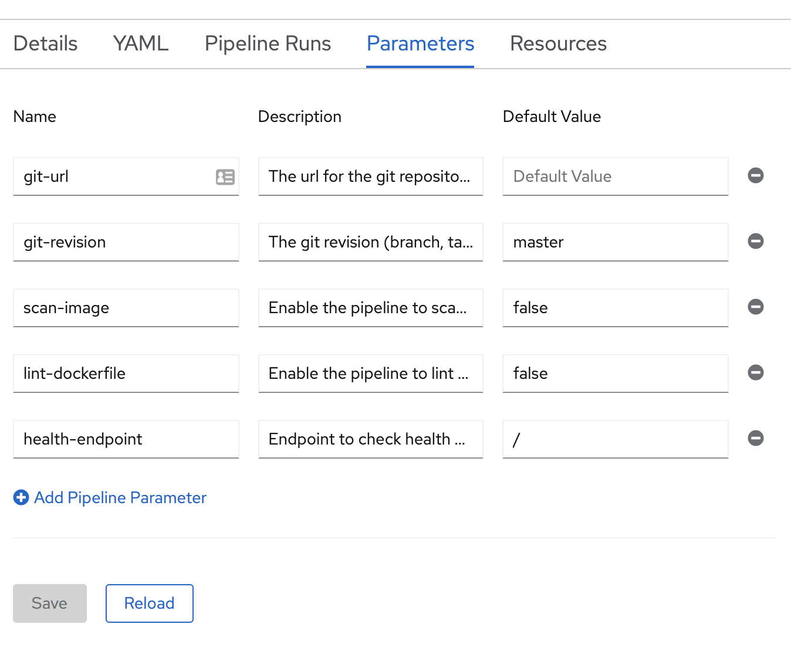
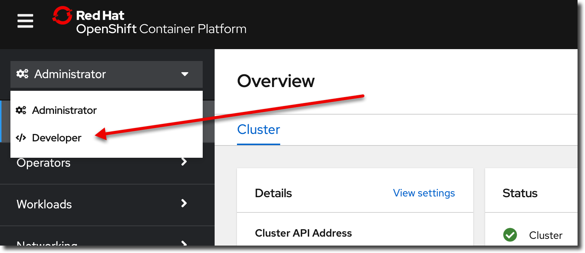
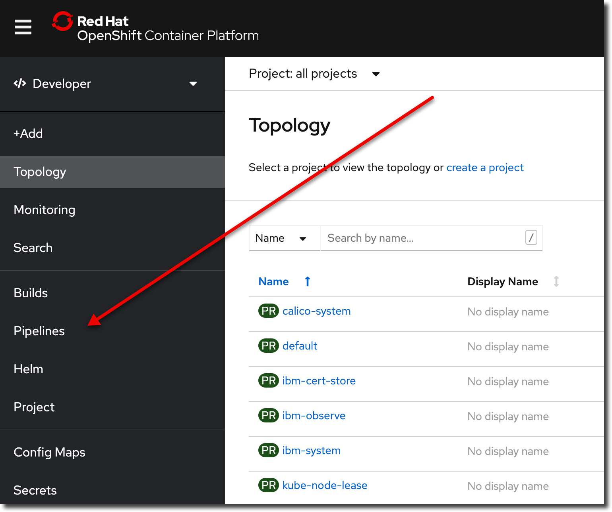
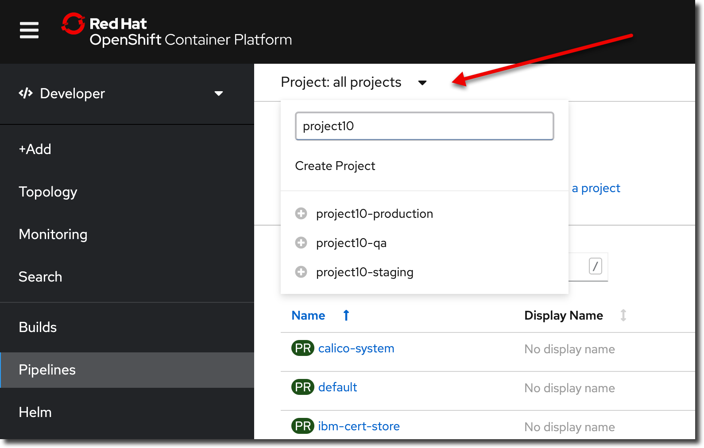

CI with Tekton
Go into your react-intro application
cd ~/react-intro
Make sure that tests pass
Run the following command:
CI=true npm test
🛑 NOTE: You should see that all of your tests pass. If all of your tests don't pass, do not continue. Fix your tests.
Make sure your code is on Gogs
Run the following command:
git status
You should have no changes to commit. If you have changes to commit.
git add -A
git commit -m "changes for pipeline"
git push origin master
Log Into the cluster
icc <cluster name>
For example: icc cohort7
🛑 If ICC doesn't work for you open the OpenShift Web Console and login via "Copy Login Command"
Create a new project
Make sure your user number is set in your environment:
echo $CGB_USER
You should see something like 03
oc sync react-intro-$CGB_USER-dev
You should see output like this:
Setting up namespace react-intro...
Setting up namespace: react-intro...
Checking for existing project: react-intro...
Creating project: react-intro...
Copying ConfigMaps
Copying Secrets
Setting current project to react-intro...
Then type oc project and you should see:
Using project "react-intro-99-dev" on server "https://c109-e.us-east.containers.cloud.ibm.com:31982".
🛑 If you see
Using project "default"it means your project creation did not work. Make sure you are logged in and have permissions. You may need to contact your instructor.
Create the Tekton Pipeline
Create the pipeline:
oc pipeline --tekton
Select the Pipeline to use in the Pipeline Run:choose the most appropriate pipeline for your project- For React, choose
ibm-nodejs
- For React, choose
Image scan (y/n)typenLint dockerfile (y/n)typen
This will create a new pipeline and add the application to the gitops repository qa environment.
If successful, the Pipeline Run URL is printed out. CMD+click on the URL to open in your default browser and see if the pipeline passes or fails.
- Run
oc consoleto open a console - In the sidebar, go to Pipelines
- Click the latest Pipeline Run
- Verify that your
teststage passes
NOTE: the pipeline WILL FAIL! That's fine. The next few steps will fix it.
Adding the Dockerfile
Add the following file to the root of your react-intro app:
nginx.conf (same as above):
server {
listen 8080;
server_name localhost;
root /usr/share/nginx/html;
location / {
index index.html index.htm;
try_files $uri $uri/ /index.html =404;
}
location /static/ {
add_header Cache-Control max-age=31536000;
}
location /index.html {
add_header Cache-Control no-cache;
}
error_page 500 502 503 504 /50x.html;
location = /50x.html {
root /usr/share/nginx/html;
}
}
Add the following file to the root of your react-intro app:
Dockerfile
FROM quay.io/upslopeio/node-alpine as build
WORKDIR /app
COPY . .
RUN npm install
RUN npm run build
FROM quay.io/upslopeio/nginx-unprivileged
COPY --from=build /app/build /usr/share/nginx/html
COPY --from=build /app/nginx.conf /etc/nginx/conf.d/default.conf
Then from the command line, to build you would execute the following commands:
# no need to run npm build
docker build --no-cache -t dockerized-react-app .
docker run -it -p 8080:8080 --rm dockerized-react-app
Then open http://localhost:8080 in your browser to see it work.
You'll have to type CTRL+C to stop the server.
Add the Helm Chart
- Download this zip file 1. You can see the contents here
- Unzip the file
-
Move the
chartdirectory to yourreact-appfolder. For example:# MAC mv ~/Downloads/chart . # Windows will be something like mv /mnt/c/Users/<user id>/Downloads/chart . -
Git add / commit and push
- View your pipeline run in the OpenShift console
- Verify that the "Deploy" step passes
At this point, your entire pipeline should be green!
Pipeline failures
You'll see the most errors the first time you are setting up the pipeline.
| Error Message | Solution |
|---|---|
| Error Unable to identify git host type | You may have entered your GitHub credentials, not userXX and password for Gogs. In OC Console, click developer view, select your project, then select "Secrets" on the left, then select git-credentials, then "Actions", then "Edit Secret", enter in userXX and password. |
test stage
| Error Message | Solution |
|---|---|
| The test stage fails | Run the following command locally and fix any errors CI=true npm test |
NOTE: if you want to ignore a failing test (just so you can move onto the next stage during class) you can change test to test.skip
build stage
| Error Message | Solution |
|---|---|
| error reading info about "/source/Dockerfile": stat /source/Dockerfile: no such file or directory | Containerize the application |
| The build stage fails | Run the following command locally and fix any errors docker build -t <application-name> . Replace <application-name> with the correct application name. |
deploy stage
| Error Message | Solution |
|---|---|
| cp: can't create directory '/ |
Add helm charts render locally with helm template <release-name> ./chart/base where <release-name> is the name of your application in all lower case. |
| error: deployment "react-intro" exceeded its progress deadline | This means the pods never came up. If you login to the project from terminal and run oc get pods, look for the pod that is failing (it will not be named using the pipeline run). You should see at least one that is not running. Then oc describe pod <pod-name> and/or oc logs <pod-name> to find out why it is not running |
error: object has been deleted |
The namespace or Argo project name is the same as your repository name. Delete the namespace or Argo project and recreate it with a new unique name. |
dockerfile-lint stage
| Error Message | Solution |
|---|---|
| dockerfile-lint stage fails | Set lint-dockerfile to false in the pipeline parameters (see the image below) |
img-scan stage
| Error Message | Solution |
|---|---|
| The img-scan stage fails | Set scan-image to false in the pipeline parameters (see the image below) |
health stage
| Error Message | Solution |
|---|---|
contains https:// in the error message |
Add a health-protocol key with a value of http to the pipeline parameters |
tag-release stage
| Error Message | Solution |
|---|---|
| The tag already exists | delete the tag on origin by running git push --delete origin <tag-name> where [tag-name> is replaced with the conflicting tag value. Then delete the tag locally, if it exists, by running git tag -d <tag-name> |
helm-release stage
| Error Message | Solution |
|---|---|
| It looks like your Artifactory installation is not complete. | Instructor should follow setup instructions at https://cloudnativetoolkit.dev/admin/artifactory-setup/ |
Other failures
| Error Message | Solution |
|---|---|
| Pod with a status of ErrImagePull or ImagePullBackOff. | oc describe pod <pod-name> to verify status - Add an ImagePullSecret for the private registry. |
| Container does not run, crashes, or other application error | Diagnose pod issues by looking at the logs: oc get podoc describe pod <pod-name>oc logs <pod-name>oc logs <pod-name> -f <- streams the logsOr run locally: docker build ... then docker run... |
Pipeline parameters
The following is a screenshot of the pipeline parameters page:

Finding your pipeline
- Select developer view 
- Select pipelines 
- Filter projects by name 